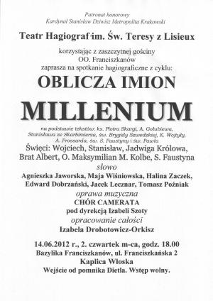
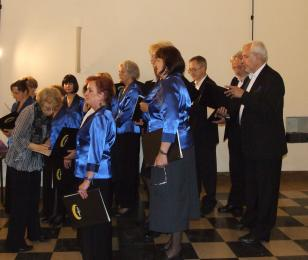
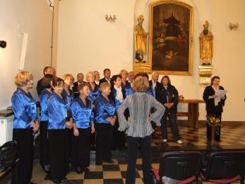
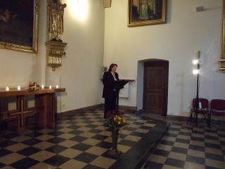
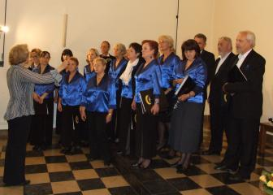
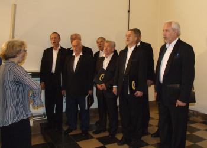
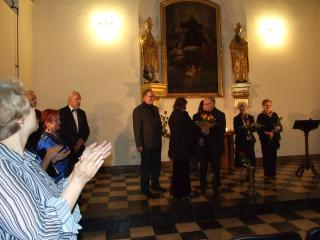
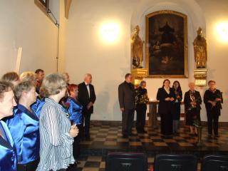
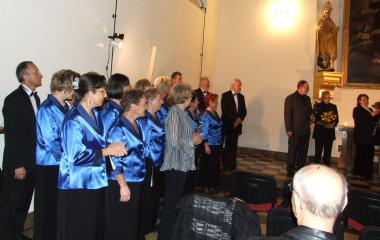

A tymczasem w Cameracie...
.
2012-06-14

Czwartkowe popołudnie. Leje w całej okolicy, ale co to dla nas, jedziemy na koncert do Krakowa. Spotykamy się o godz. 17.00 w Kaplicy Włoskiej i tu zaskoczenie. . . jest nas bardzo mało, czyżby deszcz przestraszył chórzystów?Nic to zaczynamy próbę.
 
Widać było, że pani dyrygent denerwuje się takim małym składem chóru, ale po pierwszym utworze stres opadł. Okazało się, że w tak małym składzie również ładnie brzmimy. Mamy razem z panami zaśpiewać Bogurodzicę, po chwili plan się zmienia, bo doszło kilku panów. Panowie zaśpiewają sami.Tak więc zaczynamy.

 
Spektakl wypadł super. Były kwiaty i brawa na stojąco. Wszyscy są bardzo zadowoleni.
  
W dobrym nastroju wracamy do domu.

© Stowarzyszenie Muzyczne Chór Camerata Wieliczka